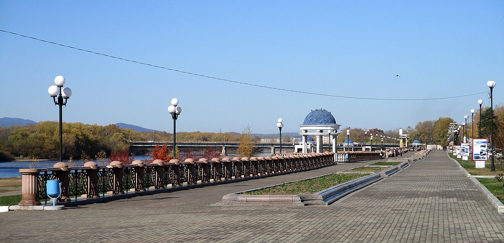
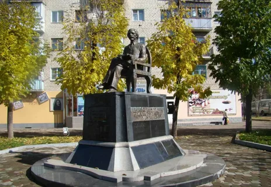
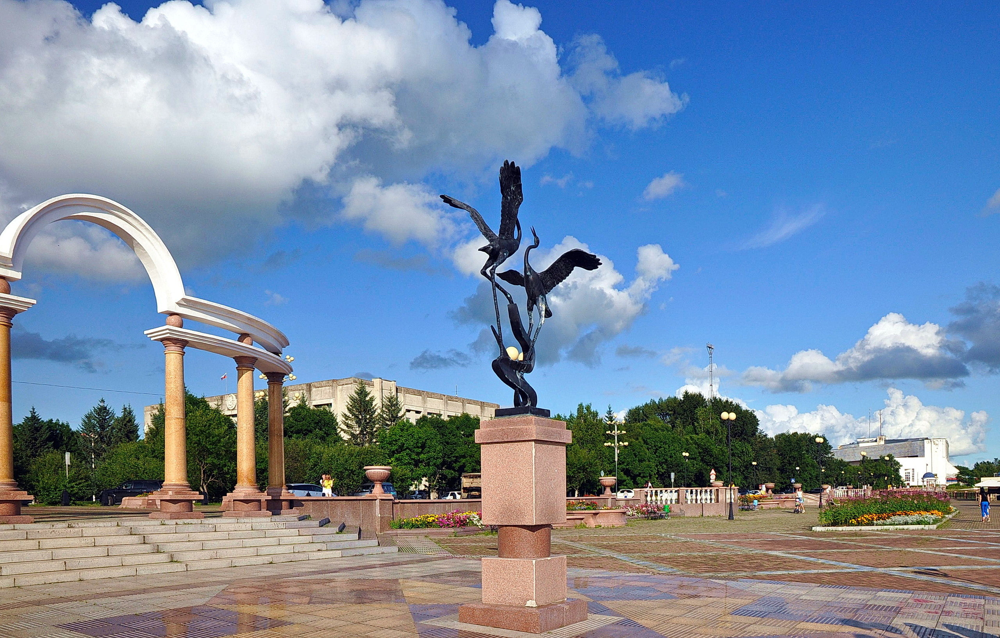
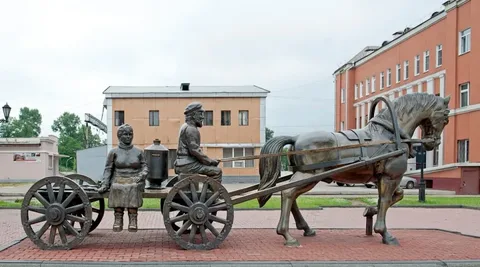
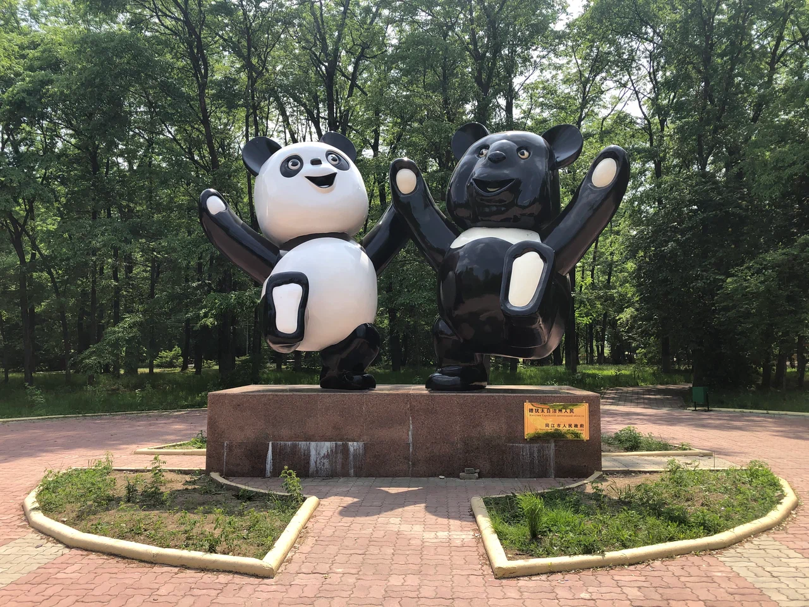
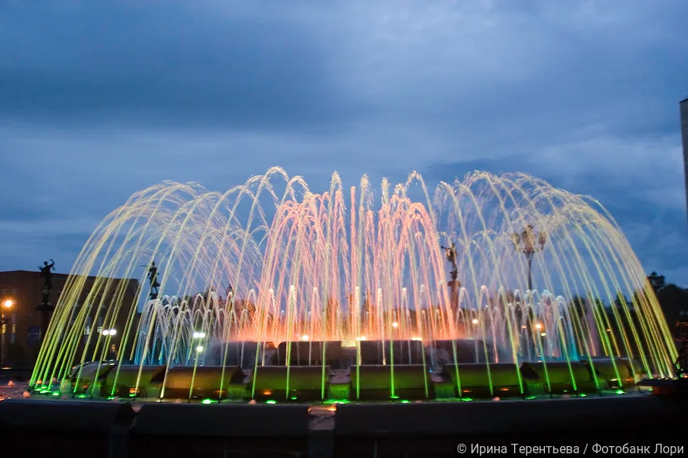
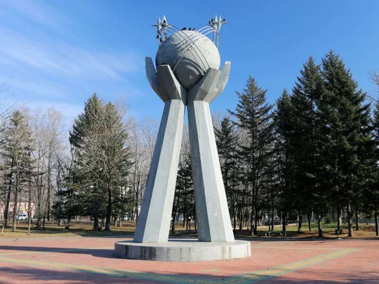

Особая история
Город вырос из посёлка при станции Тихонькая и стал главным городом области, сохранив память о первых переселенцах и этапах освоения региона.
Учебный сайт по информатике
Современный сайт о столице Еврейской автономной области: коротко, красиво и понятно о городе, его прошлом, набережной, памятниках и культурной самобытности.
О городе
Биробиджан — административный центр Еврейской автономной области на Дальнем Востоке России. Его история связана с переселенческим движением, железной дорогой, рекой Бира и культурной жизнью региона.
Город вырос из посёлка при станции Тихонькая и стал главным городом области, сохранив память о первых переселенцах и этапах освоения региона.
Биробиджан стоит на реке Бира. Название города связано с реками Бира и Биджан, а прогулки по набережной считаются одной из самых приятных частей городской среды.
В облике города заметны мотивы еврейской культуры, памятники, литературные образы, общественные пространства и спокойная дальневосточная атмосфера.
История
В 1928 году на станцию Тихонькая прибыли первые переселенцы. Этот этап стал важной точкой отсчёта в истории будущего города.
В 1931 году рабочий посёлок получил название Биробиджан. Оно связано с названиями рек Бира и Биджан.
После образования Еврейской автономной области Биробиджан стал её административным центром.
В 1937 году Биробиджан официально получил статус города и начал развиваться как областной, культурный и транспортный центр.
Интересные места
Ниже — несколько узнаваемых городских образов, которые помогают почувствовать атмосферу Биробиджана.

Одно из самых узнаваемых мест города.

Один из культурных символов города.

Красивое пространство для прогулок и отдыха.
Факты
Биробиджан часто вспоминают как город с необычным названием, особой историей и заметной культурной самобытностью.
Биробиджан является административным центром Еврейской автономной области.
Название связано с двумя реками региона — Бирой и Биджаном.
Город стоит на Транссибирской железнодорожной магистрали и исторически связан с железной дорогой.
Набережная, памятники и открытые пространства делают центр Биробиджана очень узнаваемым.
Фотогалерея




Набережная, фонтан, памятник и городские виды: фото со страниц «Фотопланета» о Биробиджане.